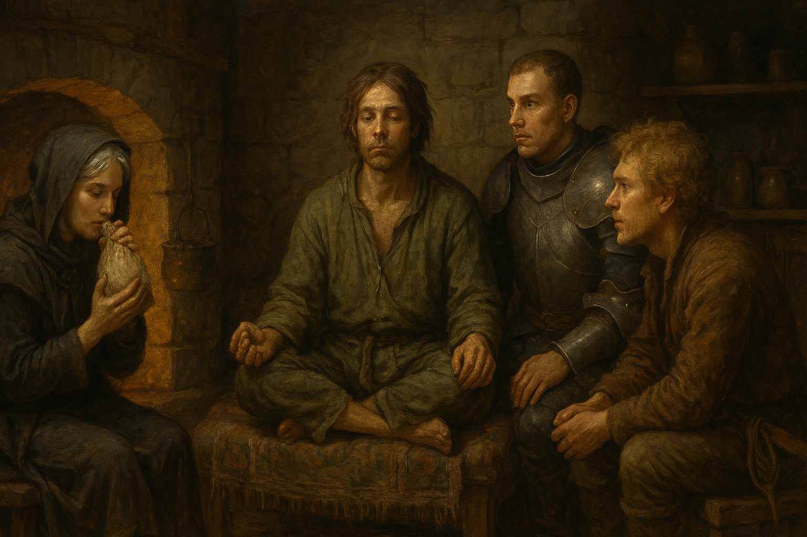

Chapter 5: The Rescue
The Gift from Alfenor


The Gift from Alfenor
15048.12.04
地底下一片空蕩蕩，漆黑無比。
帕拉丁和伊兩人只能靠著圖伊特和華生的引導，或是偶爾靠著點有光亮術的東西才能知道自己周圍有什麼。
靠著馬可斯給的魔法球，大家一路往前走。中間有座朝下的井口，伊拿出了自己的繩子，在井邊將繩子綁好，讓大家除了井中央十分緊繃的繩子外，還有額外的抓握處。大家依序抓著繩子爬下，華生和圖伊特因為能看得見，相對安全很多，伊在夸塞魔的協助下，順利降落到了下一層，帕拉丁則在自己什麼都看不見的狀況下，兩度險些喪失了性命，但在夸塞魔和華生的幫助之下，他也迷迷糊糊地抵達了地面。
大家在井邊短休息了一下，發現距離監獄已經不遠了，便趕緊啟程。
遠方似乎有些許亮光，大家停在了一座金屬門前，將門推開，裡面全是熾熱的白光。大家一邊適應光線，一邊隨著魔法球的引導，在這儼然像是一座小城區的「監獄」內穿梭。繞過好幾個巷弄，來到了一個特定的區域。按照魔法球的指示，馬可斯的妹妹瑪莉安就是關在這裡了。帶頭的圖伊特在瑪莉安的牢房前，看見他虛弱地窩在牆角，眼睛閉上，感覺精神狀況非常不好。眾人討論了一下，原本這次只是要來做個探查，下次做好準備再進行救援，但已經這麼艱辛的來到了這裡，不如一口氣完成任務，將瑪莉安救出。
大家走回瑪莉安的牢房門口，瑪莉安看見大家，以為他們是母親大人派來拯救他的，殊不知背後的主事者竟然是他的哥哥。華生試著用萬能鑰匙開鎖卻失敗了，瑪莉安覺得莫名，自己在牢房內拿了個工具，便把牢房的們從內而外的打開，讓大家也覺得奇異。如果這麼好逃獄，為什麼不逃走。瑪莉安表示剛剛大家應該已經經過中間的路，知道有多難逃。大家不是逃不走，而是知道就算逃出了牢房，也很難離開地底下。
冒險者們思索著要不要同時將其他犯人也放出，但是想在不驚擾任何人的前提下將瑪莉安救出，因此作罷。
走出日光燈照射的監牢區，瑪莉安馬上狂吐，並跪坐在了地上，體力看起來十分糟糕。大家攙扶著他，慢慢往井口的方向前進。在討論之後，大家不想再從原本洗衣房的出入口出去，覺得太有可能驚動大家，而且華生不久前透過老鼠的眼睛，發現總管姊姊似乎不在現場，很有可能他已經去回報剛才的騷動了。
大家計畫著從井口直接爬到最上方去，那邊似乎是接到舊城區去。華生飛了上去，利用伊提供的滑輪組固定繩子，讓大家透過繩子可以攀爬上來。虛弱的瑪莉安則從手中射出了蜘蛛絲，將洞口牢牢覆蓋著，大家測試了一下，發現這蜘蛛絲堅固又有彈性，就算掉下來，應該也蠻安全的，於是大家便分批爬著繩子，來到了地面。
漆黑的舊城區，艱難的任務在通力合作下終於完成了。
半夜的舊城區，異常寧靜的讓人感到害怕，伊提醒大家要提高警覺。在華生的帶領下，大家試圖朝著馬可斯宅邸的方向前進。花了一段時間，終於來到舊城區有人活動的地區了，於是伊便作回嚮導，帶著大家走回馬可斯宅邸的小捷徑。
漆黑的巷弄中沒有任何照明，但因為對這裡相當熟悉，伊按照自己的記憶向前邁進。一瞬間，似乎有什麼絆倒了他，於是他停了下來，看見巷弄右側的木門前，一張邪笑的紅臉在手中光源的照射下看起來更加邪佞。伊趕緊用他們倆熟識的盜賊手勢溝通，得知這位魔人，他的徒弟，羅特，對於好一陣子沒有他的消息覺得奇怪，因此跑來攔截他。伊向他表示自己正在執行M伯爵的任務，就快完成了，完成後會再去找他。羅特接收完訊息後便轉身推開木門跑走了，留下滿臉無奈的伊停在半路上。
在隊伍後方的圖伊特也看得懂盜賊手語，因此向伊詢問發生了什麼事。在伊簡單說明是自己不識相的徒弟後，圖伊特感受到自己的肩膀被輕拍了一下。他轉頭，看見一張邪笑的紅臉在他的眼前，距離不到五公分。那傢伙烙了一句「在下便是伊的徒弟，羅特。如果你們欺負我師父，就給我小心一點。」語畢，他便耍起腰間的匕首，但一不小心，匕首就掉到地上，落的羅特十分尷尬，蹲到地上趕緊撿起來。說完後，他便慢慢向後退，像是要消失在黑暗之中一樣。但在可清楚看見他的圖伊特眼中，可以看見羅特在退後一段距離後，便拔腿就跑，剛剛威嚇的神氣蕩然全失。
滿臉尷尬的伊頓在原地，不斷喃喃自語的唸著他那蠢徒弟。眼看帶頭的伊暫時喪失了行動能力，在隊伍中間攙扶著瑪莉安的華生便走到最前面。馬可斯的宅第在這裡已經可以用肉眼看見了。
在華生的帶領下，大家向馬可斯宅邸走去，也看見有個成年人類形體的傢伙似乎試著要開馬可斯家的門但是失敗了。圖伊特一看就認出那是他們去喝酒的夥伴蘇加魯。華生從遠處喊著蘇加魯，眾人便會合了。在瑪莉安的協助下，大門很輕鬆的就扭開了，大家走入昏暗的一樓，但在黑暗中看不見的帕拉丁沒注意到門口陷阱的地洞，直直落了下去。在圖伊特的指引下，他才從地下一樓透過樓梯走回地面。
華生將瑪莉安扶到沙發上後，便問他是否有需要協助的地方，瑪莉安請他向他哥哥要點宵夜，指定要「他愛吃的」。華生、伊，和圖伊特隱身的夸塞魔一同走到馬可斯的辦公室，輕輕敲他的門。穿著華麗睡袍的馬可斯睡眼惺忪，在了解狀況後拿了兩袋布袋給他們，表示一袋是瑪莉安要的「宵夜」，另一袋則是他們的報酬。但他對於自己妹妹被拯救帶回來這件事，似乎沒有表現出什麼雀躍的心情，只有想趕緊回到床上睡覺的疲憊模樣。圖伊特的夸塞魔留在辦公室內，發現馬可斯在門關上之後便倒頭就睡，打呼聲轟隆作響。
客廳，帕拉丁很快就陷入熟睡，蘇加魯則在瑪莉安身邊仔細觀察他身上的配件，發現他似乎藏有一些匕首、小刀和繩索在身上。對於一個似乎被關在監獄中很久的人來說，身上有這些東西，讓他感到十分訝異。
回到一樓，華生輕輕拍醒瑪莉安，將裝滿「宵夜」卻異常地輕的布袋遞給他。瑪莉安拿起布袋放在嘴前便是一吸，布袋瞬間被吸成扁的。華生感到十分詫異，這宵夜到底是什麼東西？瑪莉安很快就陷入沈睡，而且看起來氣色恢復得極好。
蘇加魯從熟睡的瑪莉安手中拿走布袋，從布袋的底端嘗試觀察看看到底有什麼酷東西，發現有一些殘餘的黃色粉末，他便吸了一下，瞬間感到精神百倍，感官大開，半夜的時間，什麼睡意都沒有了。伊好奇的拿了布袋，自己也小吸一口。圖伊特感到好奇，拿來了布袋，沾了一點，放到熟睡的帕拉丁嘴前，沾到他的嘴裡。圖伊特觀察了一下，認為這很顯然是毒品，但看起來沒什麼副作用，應該沒問題。華生則覺得不妥，但也沒有特別去制止。
伊搖搖晃晃，爬上樓上自己的房間準備就寢，但完全沒有睡意，心情亢奮到極點，看著窗外不斷扭動身體。樓下蘇加魯則試著讓自己睡著，但完全無法，看著其他人都睡去了，自己則到天亮才漸漸睡去。
一早，瑪莉安便睡醒了，盤腿坐在客廳沙發上，似乎正在盤腿打坐，口中念念有詞，絲毫沒有任何嗑藥的跡象；帕拉丁則向巡視領地般，在客廳各處不斷逡巡，東張西望，但什麼也不說；華生移動到瑪莉安身邊，等待馬可斯下樓；圖伊特閉眼休息；蘇加魯則陷入了熟睡之中。
馬可斯下樓時，伊還徹夜未眠。他走到妹妹面前，兩人相視，卻不說話，但華生可看見他們兩人的表情不斷變化，似乎正在進行某種溝通。一段時間後，他們兩人像是放鬆下來了。此時樓上傳來伊不理智的話語聲，馬可斯嘆了一口氣。
華生主動向馬可斯以及瑪莉安詢問了不少事，此時清醒的圖伊特和半睡半醒的蘇加魯也一同參與，帕拉丁則認真的巡查「自己的領地」。經過詢問，他們得知馬可斯對於潘蜜拉等反王派的舉動，想繼續觀察，因此想再待在麥克嵩一段時間，但比起國王的安危，很顯然馬可斯還是比較在意自己與家人的安全。
另外大家在詢問下得知昨晚馬可斯給瑪莉安服用的「宵夜」是一款被稱為「檸檬」的毒品，在市面上很常見，通常是拿來當作興奮劑的，和有時拿來在宗教儀式上作法用的毒品不同。
詢問瑪莉安後，他們也得知現任國王艾略特四世的母后瑪莉恩女士過去似乎是他蜘蛛神教的同夥，但在不知何時與拉索斯教合作的他的背叛下，身為蜘蛛神教在麥克嵩代言人的瑪莉安被揭發臥底的身份，關入地牢，原名瑪麗蓮的瑪莉恩也改了名字，在麥克嵩繼續發展。另外安娜過去似乎也是瑪莉安的手下，但他沒想過安娜如今竟然可以發展得強大到能把一座城鎮以一己之力毀滅。對於瑪莉恩的崛起，瑪莉安感到十分不滿，但是對於魁儡國王艾略特，他則似乎不太在乎。
同時，瑪莉安也表示雖然阿爾芬諾被當作蜘蛛神，但蜘蛛神教忠實的信徒都知道母親大人才是真正的神，阿爾芬諾不過是他創造出來的孽物，卻收拾不掉罷了，而安娜現在似乎靠向了阿爾芬諾，而非和自己一樣忠誠於母親大人。
在經過對話後，馬可斯對於待在麥克嵩的決定動搖了，他認為將大家捲入宮廷鬥爭不是一件安全的事，試著說服大家先離開邁克嵩。但在離開前，他想帶圖伊特去一個地方。出發前，馬可斯換了一身樸素的裝扮，同時也在圖伊特的請求下，準備了一金幣量的檸檬，讓他拿來研究研究。
出發前，蘇加魯也將昨晚華生從馬可斯那裡拿到的金幣分給大家：總共400枚金幣，華生、圖伊特和伊一人分100枚，沒有參與簽約的帕拉丁和沒有參與任務的蘇加魯則一人分50枚。
在圖伊特的要求下，其他人也跟著馬可斯一起出發，留下瑪莉安照顧昏睡過去的伊。馬可斯帶著大家走到舊城區的一處廢棄房屋。漆黑的一樓裡面儘是才破的傢俱，馬可斯帶大家從樓梯往下走到地下室。地下室有一座壁爐，和一張桌子。桌子後坐著一個披著有星星符號斗篷的人，一動也不動。在馬可斯的示範下，他拿出一枚金幣放在桌子上，那人便伸出手，將金幣拖走。馬可斯開口問了他「今天我妹妹說的那些話有說謊或隱瞞嗎？」，那人便回應了他，表示沒有說謊，但是有隱瞞。那人的聲音似乎是個年輕女子的聲音，大家聽了覺得異常的熟悉。
接著華生、圖伊特也給了些金幣，和這人問了些問題。他們得知，拉索斯教在麥克嵩最大的聚集地在崔尼斯劇院的地下通道；以他們身形被霍布製造出來的泥人從瑟巴諾出發，快要到麥克嵩了，只剩幾個月的路程；圖伊特與交易之神意外達成的開眼交易無法取消，但會有命定之人拯救蘿琳；最後，蘿琳的軀體在命定之人拯救他之前，都會安全地被保護好。在離開前，圖伊特張開了他額頭的眼睛，發現如他所猜測：斗篷底下的那人便是化為陶瓷的蘿琳，但蘿琳背後似乎有個木偶，身體的零件都被拆開掉落在地上了。
離開這間小黑屋後，馬可斯在華生的請求下，回答了帶他們來這裡的原因。他表示這裡是交易之神在麥克嵩的重要據點，同時他也想讓大家可在這邊得到無法從他或瑪莉安那邊得到的解答。最後，他其實早就料到蘿琳最後會來到這裡，因此想讓大家可以來這邊看看，確保蘿琳過得好好的。
回程的路上，華生和其他夥伴討論著下一步該往哪裡去？他們提出了幾個方案：去崔尼斯劇院樓下的地下通道將拉索斯教一網打盡、回堵往麥克嵩來的泥人、帶馬可斯到寇林菲爾德避難，或是去見蘇加魯信仰的神王大人。
麥克嵩的局勢已經難以掌握，來自拉索斯教的威脅，與反王派壓倒性的勝利都難以對抗。團隊的下一步，充滿了不確定性。
15048.12.04
The underground was empty and pitch black.
Paladin and Yi can only rely on the guidance of Tweeter and Watson, or occasionally rely on something with light magic to know what is around them.
Relying on the magic ball given by Marcus, everyone moved forward. There was a wellhead facing downwards in the middle. Yi took out his rope and tied the rope at the edge of the well, so that in addition to the very tight rope in the center of the well, everyone had an extra place to hold on. Everyone grabbed the rope and climbed down in sequence. Watson and Tweeter were relatively safe because they could see. Yi successfully landed on the next floor with the help of Quasaimo. Paladin almost lost his life twice when he could not see anything. However, with the help of Quasaimon and Watson, he also reached the ground in a daze.
Everyone took a short rest by the well and found that they were not far from the prison, so they quickly set off.
There seemed to be some light in the distance. Everyone stopped in front of a metal door and pushed it open. It was filled with blazing white light. While adapting to the light, everyone followed the guidance of the magic ball and shuttled through this "prison" that looked like a small city. After going around several alleys, we came to a specific area. According to the instructions of the magic ball, Marcus's sister Marianne was imprisoned here. The leader, Tweeter, was in front of Marianne's cell and saw him sitting weakly in the corner with his eyes closed, feeling that his mental state was very bad. Everyone discussed it. Originally, they were just going to do an exploration this time, and be prepared for rescue next time. But since they have come here so hard, it is better to complete the task in one go and rescue Marianne.
Everyone walked back to the door of Marianne's cell. When Marianne saw everyone, she thought they were sent by The Mother to save him, but she didn't know that the person in charge behind it was actually his brother. Watson tried to open the lock with the universal Kaname key but failed. Marianne felt inexplicable. She took a tool in the cell and opened the cell from the inside out, which made everyone feel strange. If it's so easy to escape from prison, why not escape. Marianne said that everyone should have passed through the middle road just now and knew how difficult it was to escape. It's not that everyone can't escape, but they know that even if they escape from the cell, it will be difficult to leave the underground.
The adventurers considered whether to release other prisoners at the same time, but they wanted to rescue Marianne without disturbing anyone, so they gave up.
Walking out of the prison area illuminated by fluorescent lights, Marianne immediately vomited and knelt on the ground. Her physical strength looked very bad. Everyone supported him and slowly moved towards the wellhead. After the discussion, everyone did not want to go out through the original entrance and exit of the laundry room, because it was too likely to alarm everyone. Moreover, Watson not long ago discovered through the eyes of a mouse that the manager sister did not seem to be at the scene. It is very likely that he had gone to report the commotion just now.
Everyone planned to climb directly from the wellhead to the top, which seemed to be connected to the old city. Watson flew up and used the pulley set provided by Yi to fix the rope so that everyone could climb up through the rope. The weak Marianne shot out spider silk from her hand and covered the hole tightly. Everyone tested it and found that the spider silk was strong and elastic. Even if it fell, it should be quite safe, so everyone climbed the rope in batches and came to the ground.
In the dark old city, the difficult task was finally completed with joint efforts.
The old city in the middle of the night is extremely quiet and scary. Yi reminds everyone to be alert. Under the leadership of Watson, everyone tried to move towards the Marcus mansion. After a while, we finally arrived at an area of the old city where people were active, so Yi acted as a guide and took everyone on a shortcut back to Marcus's mansion.
There was no lighting in the dark alley, but because he was quite familiar with it, Yi moved forward according to his memory. For a moment, something seemed to trip him up, so he stopped and saw a red face with an evil smile in front of the wooden door on the right side of the alley, which looked even more evil under the light source in his hand. Yi quickly communicated with the thieves gestures they were familiar with, and learned that this demon, his apprentice, Lott, felt strange that there had been no news from him for a while, so he came to intercept him. Yi told him that he was performing Count M's mission and was about to complete it, and would go find him again after completion. After receiving the message, Lott turned around and pushed open the wooden door and ran away, leaving Yi with a helpless face stopped halfway.
Tweeter, who was at the back of the team, could also understand thieves' sign language, so he asked Yi what happened. After Yi simply explained that he was his ignorant apprentice, Tweeter felt a tap on his shoulder. He turned his head and saw a red face with an evil smile in front of him, less than five centimeters away. The guy said, "I am Yi's apprentice, Lott. If you bully me, Shifu, be careful." After saying this, he picked up the dagger on his waist, but accidentally, the dagger fell to the ground. Lott was very embarrassed when he fell, so he squatted on the ground and quickly picked it up. After saying that, he slowly backed away, as if he was going to disappear into the darkness. But in the eyes of Tweeter, who could see him clearly, he could see that Lott backed away for a distance and then ran away. The intimidating look he had just lost was completely gone.
Yi, whose face was full of embarrassment, paused in place and kept mumbling to himself about his stupid apprentice. Seeing that the leader Yi was temporarily unable to move, Watson, who was supporting Marianne in the middle of the team, walked to the front. Marcus’ mansion is already visible to the naked eye from here.
Led by Watson, everyone walked towards the Marcus mansion and saw a guy in adult human form who seemed to be trying to open the door to Marcus' house but failed. Tweeter recognized it as their drinking buddy Sugalu at a glance. Watson shouted Sugalu from a distance, and everyone gathered together. With Marianne's help, the door opened easily, and everyone walked into the dim first floor. However, Paladin, who was invisible in the darkness, did not notice the trap hole at the door and fell straight down. Under the guidance of Tweeter, he walked back to the ground through the stairs from the first floor of the basement.
Watson helped Marianne to the sofa and asked him if he needed help. Marianne asked him to order a midnight snack from his brother, specifying "his favorite food". Watson, Yi, and Tweeter The invisible Quasaimon walked to Marcus' office and knocked lightly on his door. Marcus, who was wearing a gorgeous nightgown with sleepy eyes, took two bags to them after understanding the situation, indicating that one bag was Marianne's "late night snack" and the other bag was their reward. But he didn't seem to show any excitement about the fact that his sister was rescued and brought back. He only looked tired and wanted to go back to bed quickly. Tweeter's Quasaimon stayed in the office and found Marcus falling asleep after the door was closed, snoring loudly.
Living room, Paladin soon fell into a deep sleep, while Sugalu carefully observed the accessories on his body next to Marianne and found that he seemed to have some daggers, knives and ropes hidden on his body. For a man who seemed to have been in prison for a long time, these things were surprising to him.
Back on the first floor, Watson gently patted Marianne awake and handed him an unusually light cloth bag filled with "late night snacks." Marianne picked up the bag and put it in front of her mouth and sucked on it. The bag was instantly sucked into a flat shape. Watson was very surprised, what on earth is this midnight snack? Marianne soon fell into a deep sleep and seemed to be recovering beautifully.
Sugalu took the bag from the sleeping Marianne and tried to look at the bottom of the bag to see what cool stuff there was. He found some residual yellow powder and inhaled it. He instantly felt energized and his senses were widened. In the middle of the night, there was no sleepiness at all. Yi curiously took the bag and took a sip himself. Tweeter was curious, so he brought a cloth bag, dipped a little in it, put it in front of the sleeping Paladin's mouth, and dipped it into his mouth. Tweeter looked at it and thought it was obviously a drug, but it didn't seem to have any side effects, so it should be fine. Watson felt it was inappropriate, but did not specifically stop it.
Yi staggered and climbed upstairs to his room to go to bed, but he was not sleepy at all. He was extremely excited and kept twisting his body while looking out the window. Downstairs, Sugalu tried to make himself fall asleep, but was completely unable to do so. He watched everyone else fall asleep, and he gradually fell asleep until dawn.
Early in the morning, Marianne woke up and sat cross-legged on the sofa in the living room. She seemed to be meditating cross-legged, muttering words, without any signs of taking drugs; Paladin, as if patrolling the territory, kept patrolling around the living room, looking around, but saying nothing; Watson moved to Marianne's side, waiting for Marcus to come downstairs; Tweeter He closed his eyes and rested; Sugalu fell into a deep sleep.
When Marcus went downstairs, Yi was still up all night. He walked up to his sister, and the two looked at each other but said nothing. However, Watson could see that their expressions were constantly changing, as if they were communicating with each other. After a while, the two of them seemed to relax. At this time, Yi's irrational words came from upstairs, and Marcus sighed.
Watson took the initiative to ask Marcus and Marianne a lot of things. At this time, Tweeter, who was awake, and Sugalu, who was half asleep, also participated. Paladin was carefully patrolling "his territory". After questioning, they learned that Marcus wanted to continue to observe the actions of Pamela and other anti-king factions, so he wanted to stay in Macksohn for a while longer. However, compared to the safety of the king, it was obvious that Marcus still cared more about the safety of himself and his family.
In addition, after asking, everyone learned that the "late night snack" Marcus gave Marianne last night was a drug called "lemon", which is very common on the market and is usually used as a stimulant. It is different from the drug that is sometimes used in religious ceremonies.
After questioning Marianne, they also learned that the current king King Elliot IV's queen mother, Ms. Marian, seemed to be an accomplice of his Spider God Cult in the past. However, under the betrayal of him who had cooperated with the Lassos Cult at an unknown time, Marianne, who was the spokesperson of the Spider God Cult in Macksohn, was exposed as an undercover agent and was imprisoned in the dungeon. Marian, whose original name was Marilyn, also changed her name and continued to develop in Macksohn. In addition, Anna seemed to have been Marianne's subordinate in the past, but he never thought that Anna could now become so powerful that it could destroy a town by itself. Marianne was very dissatisfied with Marian's rise, but she didn't seem to care much about the puppet king Eliot.
At the same time, Marianne also said that although Alfenor is regarded as the Spider God, loyal followers of the Spider God Sect know that The Mother is the real god. Alfenor is just an evil created by him, but he cannot clean it up. And Anna now seems to be leaning on Alfenor, rather than being as loyal to The Mother as herself.
After the conversation, Marcus wavered in his decision to stay in Macksohn. He believed that it was not a safe thing to involve everyone in the palace struggle, and tried to persuade everyone to leave Mike Song first. But before he left, he wanted to take Twitter somewhere. Before setting off, Marcus changed into a simple outfit, and at the request of Twitter, he prepared a lemon worth of gold coins for him to study.
Before departure, Sugalu also distributed the gold coins that Watson got from Marcus last night to everyone: a total of 400 gold coins, Watson, Tweeter and Yi each received 100 gold coins, and Paladin who did not participate in the contract and Sugalu who did not participate in the task each received 50 gold coins. pieces.
At the request of Tweeter, the others also set off with Marcus, leaving Marianne to take care of the unconscious Yi. Marcus leads everyone to an abandoned house in the old town. The dark first floor was filled with broken furniture. Marcus led everyone down the stairs to the basement. There is a fireplace and a table in the basement. Sitting behind the table was a man wearing a cloak with a star symbol, motionless. Following Marcus's demonstration, he took out a gold coin and placed it on the table. The man stretched out his hand and dragged the gold coin away. Marcus asked him, "Did I lie or conceal what my sister said today?" The man responded and said that he did not lie, but he concealed something. The man's voice seemed to be that of a young woman, and everyone felt unusually familiar.
Then Watson and Tweeter also gave some gold coins and asked this person some questions. They learned that the largest gathering place of the Rathos Cult in Macksohn was in the underground passage of the Trinis Theater; the clay figures created by Hobb in their bodies set out from Sebano and were about to arrive at Macksohn, with only a few months left; the eye-opening deal that Tweeter unexpectedly reached with the God of Transactions could not be canceled, but someone destined to save Roline; finally, Roline His body will be kept safe until the destined One rescues him. Before leaving, Tweeter opened the eyes on his forehead and found that as he guessed: the person under the cloak was Roline who had turned into ceramics, but there seemed to be a puppet behind Roline, and all the body parts were disassembled and fell to the ground.
After leaving this small dark room, Marcus answered the reason why he brought them here at the request of Watson. He said that this is an important stronghold of the God of Trading in Macksohn. At the same time, he also wants everyone to get answers here that cannot be obtained from him or Marianne. Finally, he had actually expected that Roline would come here in the end, so he wanted everyone to come here to see and make sure Roline was doing well.
On the way back, Watson and other partners discussed where to go next? They came up with several plans: go to the underground passage downstairs of Trinis Theater to wipe out all the Rathos cult, block the clay figures coming to Macksohn, take Marcus to Cornfield for refuge, or go to meet the God King of Sugalu faith.
Macksohn's situation has become difficult to control. The threat from the Rathos Cult and the overwhelming victory of the anti-king faction are difficult to resist. The team's next step is full of uncertainty.